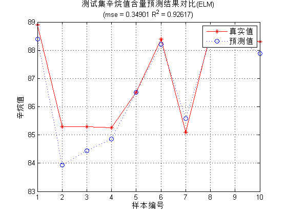

Contents
I. 清空环境变量
clear all
clc
II. 训练集/测试集产生
1. 导入数据
load spectra_data.mat
2. 随机产生训练集和测试集
temp = randperm(size(NIR,1)); % 训练集——50个样本 P_train = NIR(temp(1:50),:)'; T_train = octane(temp(1:50),:)'; % 测试集——10个样本 P_test = NIR(temp(51:end),:)'; T_test = octane(temp(51:end),:)'; N = size(P_test,2);
III. 数据归一化
1. 训练集
[Pn_train,inputps] = mapminmax(P_train);
Pn_test = mapminmax('apply',P_test,inputps);
2. 测试集
[Tn_train,outputps] = mapminmax(T_train);
Tn_test = mapminmax('apply',T_test,outputps);
IV. ELM创建/训练
[IW,B,LW,TF,TYPE] = elmtrain(Pn_train,Tn_train,30,'sig',0);
V. ELM仿真测试
tn_sim = elmpredict(Pn_test,IW,B,LW,TF,TYPE);
1. 反归一化
T_sim = mapminmax('reverse',tn_sim,outputps);
VI. 结果对比
result = [T_test' T_sim'];
1. 均方误差
E = mse(T_sim - T_test);
2. 决定系数
N = length(T_test); R2=(N*sum(T_sim.*T_test)-sum(T_sim)*sum(T_test))^2/((N*sum((T_sim).^2)-(sum(T_sim))^2)*(N*sum((T_test).^2)-(sum(T_test))^2));
VII. 绘图
figure(1) plot(1:N,T_test,'r-*',1:N,T_sim,'b:o') grid on legend('真实值','预测值') xlabel('样本编号') ylabel('辛烷值') string = {'测试集辛烷值含量预测结果对比(ELM)';['(mse = ' num2str(E) ' R^2 = ' num2str(R2) ')']}; title(string)